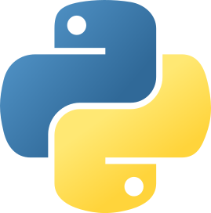
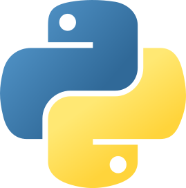

Implémentation d'un besoin client et comparaison d'approches algorithmiques
Implémentation d'un besoin client et comparaison d'approches algorithmiques

Ce projet concernait dans notre cas la classification de dépêches en plusieurs catégories (sport, économie, santé…) en fonction des mots qu'elles contenaient. Nous avons dû pour cela créer un programme qui, à partir d'un lexique associant certains mots à un score pour chaque catégorie, associe à chaque dépêche un score pour chaque catégorie. Cette approche nous a permis de nous rendre compte que les lexiques construits manuellement étaient parfois insuffisants pour avoir des résultats précis et nous a conduit à automatiser cette création avec du machine learning : à partir d'un ensemble de dépêches à la catégorie connue, nous avons pu identifier les mots revenants le plus souvent pour chaque catégorie et ainsi associer un score plus adapté à chaque mot.
Nous avons également dû mesurer en temps et en nombre d'opérations notre programme, nous conduisant par exemple à trier les mots des lexiques afin de pouvoir rechercher le mot voulu en un nombre d'opérations plus faible.
Enfin, nous avons pu implémenter certaines extensions comme la lecture d'un flux RSS pour continuer à entraîner notre programme au delà de l'échantillon fourni, ou encore l'implémentation de la méthode des k plus proches voisins à la place des score pour trouver les dépêches partageant le plus de mots en commun. Nous n'avons pas réussi à complètement implémenter ces extensions.
Nous nous sommes organisés dans le binôme afin que chacun puisse travailler à hauteur de ses capacités : ainsi, je me suis occupé de la partie de la création automatisée des lexiques, de la comparaison de nos différents algorithmes ainsi que de l'implémentation de la méthode des k plus proches voisins.
Installation de services réseau
Installation de services réseau
Ce projet concernait l'installation d'un serveur Debian 12 équipé d'Apache, PostgreSQL et PHP. Il a dans ce cadre été nécessaire de créer un guide complet d'installation en anglais qui permette de reproduire notre installation et qui soit compréhensible par tout le monde.
Le serveur a été installé sur une machine virtuelle Qemu, et a été configuré de l'installation d'une version de Debian sans serveur X jusqu'à la configuration de PHP et de PostgreSQL pour l'interrogation depuis un poste distant. Ainsi, la configuration terminée permettait de se connecter à une base de donnée depuis un poste distant ainsi que d'héberger et de permettre la consultation de sites HTML et PHP.
Exploitation d'une base de données
Exploitation d'une base de données
Ce projet concernait la création d'un rapport en anglais concernant un ensemble de données extraites d'une base de données concernant les Nutriscores. Nous avons dans ce cadre été jugés sur notre capacité à trier une base de données selon des critères précis, mais également à en extraire des informations pertinentes dans le cadre de notre étude et à les présenter visuellement.
Dans notre cas, le sujet de l'étude était l'étude de l'éventuel lien entre les apports nutritionnels et le Nutriscore sur un échantillon composé de produits à base de viande transformée aux Etats-Unis. Nous avons choisi une approche du sujet en deux parties; ainsi, après avoir fait des observations générales sur l'échantillon, comme la proportion de produits pour chaque Nutriscore, nous avons étudié le lien entre des métriques précises comme la quantité de protéines ou de graisse pour 100g de produit et le Nutriscore. Ainsi, nous avons pu conclure en indiquant dans quelle mesure les apports nutritionnels influent sur le Nutriscore sur notre échantillon.
Qui suis-je ?
Entrée au lycée Ferdinand Buisson, section scientifique
Entrée à l'IUT2 UGA pour un BUT informatique
 



Qui suis-je ?
Passionné depuis toujours par les jeux vidéo et l'informatique, j'ai très tôt voulu devenir développeur de jeux vidéo. J'ai dans ce cadre intégré le lycée Ferdinand Buisson, choisissant comme spécialités l'informatique et les mathématiques. Après avoir obtenu mon baccalauréat mention très bien, j'ai intégré l'IUT2 de Grenoble pour un BUT informatique. Épanoui dans mes études, je suis particulièrement attiré par les aspects de réseau et de gestion de l'informatique.
J'adore apprendre de nouvelles choses et tout faire moi-même : j'ai une montagne de petits projets personnels qui ne sont utiles qu'à moi, comme un bot Discord, un programme de tri de mes playlists Spotify ou encore un script d'automatisation du transfert de ma sauvegarde d'Animal Crossing de ma 2DS vers mon PC. Cette versatilité me permet de maîtriser facilement de nouvelles technologies et de m'adapter à de nouveaux environnements.
En dehors de mes études, je suis évidemment passionné de jeux vidéo, mais également de musique que je pratique depuis 10 ans, personnellement et au sein d'un ensemble de percussions dont je fais partie. J'exprime également ma créativité à travers la photographie et la broderie.